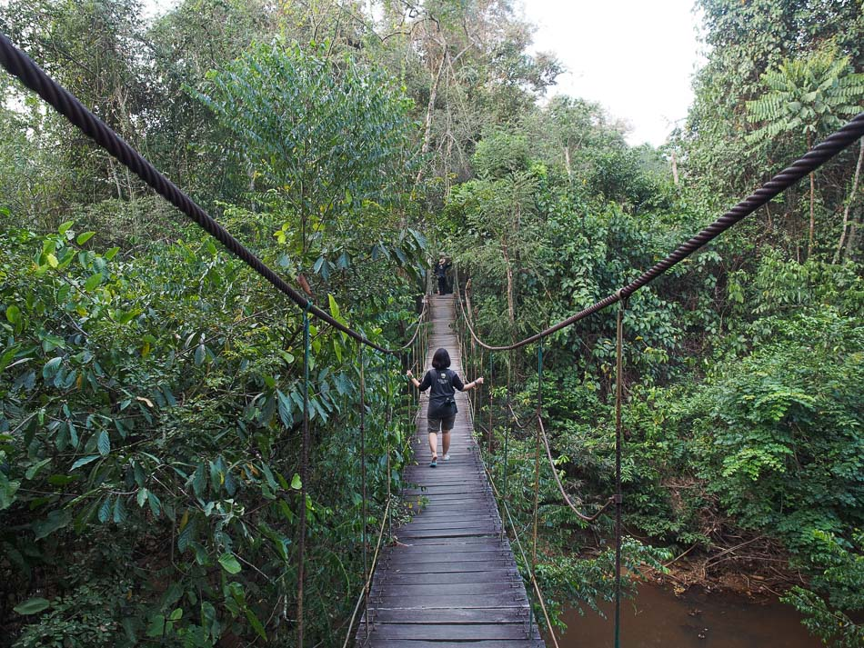

Kutai National Park
There are not many tourists spot in my hometown since it is only a small town. Most people spend their holiday at home, going to local park, or just eating out. If it is a long holiday, people will go to bigger city like Bontang, Samarinda, or even back to their original hometown outside of Borneo. One of the more recognized tourist spots in my hometown is a national park, it is called Kutai National Park. It is home to native animals such as honey bear and orangutan. It also has one of the biggest tree in the world, an ironwood tree with a 2,47 meter diameter.